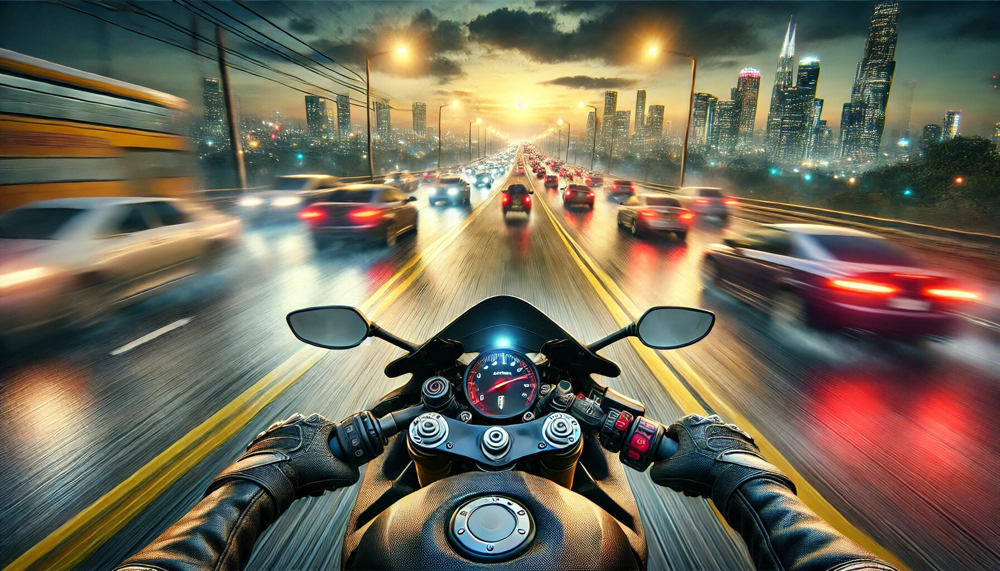

If you’ve ever dreamed of hitting the open road on a high-speed motorcycle, weaving through traffic, and feeling the adrenaline rush of a true racer, then Traffic Rider by skgames is the game for you. This thrilling bike racing game has taken the mobile gaming world by storm, offering players an immersive experience that combines stunning graphics, endless excitement, and a full career mode that keeps you hooked for hours. Whether you’re a casual gamer or a hardcore racing enthusiast, Traffic Rider delivers an experience that’s hard to put down. Let’s dive into all the reasons why this game is a must-play.
One of the first things you’ll notice about Traffic Rider is its jaw-dropping graphics. The game boasts a level of visual detail that’s rare in mobile racing games. From the sleek designs of the bikes to the realistic environments, every element is crafted to perfection. The roads, the traffic, the weather effects—everything feels alive and dynamic.
Riding through the game’s various locations, you’ll feel like you’re actually on the road. The sunsets are breathtaking, the rain effects are so real you might want to grab an umbrella, and the night rides are illuminated by the glow of streetlights and car headlights. It’s not just a game; it’s a visual masterpiece that makes you appreciate the beauty of virtual racing.
Let’s face it—grinding for in-game currency can be a real buzzkill. But in Traffic Rider, that’s not a problem. With unlimited money, you can unlock all the bikes, upgrades, and customization options you want without spending hours trying to earn cash. This feature is a game-changer, especially for players who want to dive straight into the action without any delays.
Want to buy the fastest bike in the game? Go ahead! Fancy upgrading your engine to max speed? No problem! With unlimited money, the possibilities are endless, and you can focus on what really matters—enjoying the ride.
Speaking of bikes, Traffic Rider offers an impressive collection of motorcycles to choose from. From sleek sports bikes to powerful cruisers, there’s something for every type of rider. And the best part? All bikes are unlocked from the start. That’s right—no need to complete endless levels or meet specific requirements to access your dream bike.
Each bike comes with its own unique stats, including speed, acceleration, and braking. Whether you prefer a nimble bike that zips through traffic or a heavy-duty machine that dominates the road, you’ll find the perfect ride for your style. Plus, the ability to customize your bike’s appearance adds a personal touch that makes the experience even more enjoyable.
Traffic Rider is not your average racing game. It’s packed with features that keep the excitement levels high. The game offers multiple modes, including Career Mode, Endless Mode, and Time Trial, each with its own set of challenges and rewards.
In Career Mode, you’ll progress through a series of missions that test your skills and push you to become a better rider. From overtaking a certain number of cars to completing races within a time limit, every mission is designed to keep you on your toes. And if you’re in the mood for some free-roaming fun, Endless Mode lets you ride as far as you can without any restrictions. It’s the perfect way to unwind and enjoy the thrill of the open road.
For those who love a good story, Traffic Rider’s Career Mode is a treat. It’s not just about racing; it’s about building your legacy as a professional rider. You’ll start as a rookie and work your way up the ranks, completing missions, earning rewards, and unlocking new bikes along the way.
The missions are diverse and challenging, ensuring that you never get bored. Whether you’re racing against the clock, dodging traffic, or performing stunts, there’s always something new to keep you engaged. And as you progress, you’ll feel a real sense of accomplishment, knowing that you’re becoming a true racing legend.
What’s a racing game without the roar of a powerful engine? Traffic Rider nails it with its realistic sound effects. The revving of the engine, the screech of tires, the honking of car horns—it all adds to the immersive experience. You’ll feel like you’re sitting on a real bike, with the wind in your face and the sound of the road beneath you.
The game also features a dynamic soundtrack that complements the action perfectly. Whether you’re cruising through a quiet countryside or speeding down a busy highway, the music sets the tone and keeps you pumped up for the ride.
One of the best things about Traffic Rider is its user-friendly controls. The game is designed to be accessible to players of all skill levels, from beginners to seasoned pros. The intuitive controls make it easy to steer, accelerate, and brake, allowing you to focus on the thrill of the ride.
For those who want a bit more challenge, the game also offers advanced control options that give you more precision and control over your bike. Whether you’re a casual player looking for some fun or a hardcore gamer seeking a challenge, Traffic Rider has you covered.
skgames is known for its commitment to keeping players engaged, and Traffic Rider is no exception. The game receives regular updates that introduce new features, bikes, and challenges. This means there’s always something new to look forward to, keeping the experience fresh and exciting.
Whether it’s a new bike model, a new location to explore, or a new set of missions, the updates ensure that Traffic Rider never gets stale. It’s like getting a new game every few months, without having to spend a dime.
In today’s fast-paced world, not everyone has hours to spend on gaming. Traffic Rider understands this and is designed to be enjoyed in short bursts or long sessions. The missions are quick and engaging, making it easy to pick up and play whenever you have a few minutes to spare. And with unlimited money and all bikes unlocked, you don’t have to worry about grinding or waiting to access the best parts of the game.
While Traffic Rider is all about speed and skill, it doesn’t take itself too seriously. The game has a lighthearted tone that adds to its charm. From the quirky mission names to the occasional funny moments during gameplay, there’s always something to make you smile. After all, racing is supposed to be fun, and Traffic Rider delivers on that front.
In a world filled with mobile games, Traffic Rider stands out as a true gem. Its immersive graphics, unlimited money, all bikes unlocked, and full career mode make it a complete package that offers endless excitement. Whether you’re a fan of racing games or just looking for something fun to play, Traffic Rider is sure to deliver.
So, what are you waiting for? Download Traffic Rider today, hop on your bike, and hit the road. With its stunning visuals, thrilling gameplay, and endless possibilities, it’s a ride you won’t want to miss. And who knows? You might just discover your inner racing legend along the way. Happy riding! 🏍️